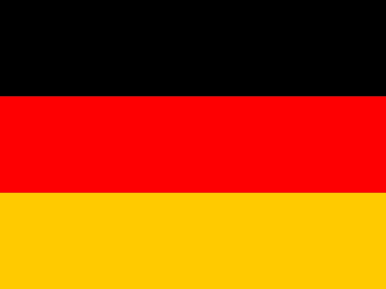

Gran Premio de Gran Bretaña 20222022 British Grand Prix — Tiempos por vueltaLap Times
Tiempo de cada vuelta por piloto. Vacío = vuelta no registrada (retirado, DNS o a más vueltas).Each driver's time per lap. Blank = lap not recorded (retired, DNS, or further laps down).

Mercedes-AMG Petronas F1 Team · Mercedes HAM: Lewis Hamilton (44)RUS: George Russell (63)
HAM: Lewis Hamilton (44)RUS: George Russell (63) Oracle Red Bull Racing · Red Bull RBPTH001
Oracle Red Bull Racing · Red Bull RBPTH001 VER: Max Verstappen (1)
VER: Max Verstappen (1) PER: Sergio Pérez (11)
PER: Sergio Pérez (11) Scuderia Ferrari · Ferrari
Scuderia Ferrari · Ferrari LEC: Charles Leclerc (16)
LEC: Charles Leclerc (16) SAI: Carlos Sainz Jr. (55)McLaren F1 Team · MercedesNOR: Lando Norris (4)
SAI: Carlos Sainz Jr. (55)McLaren F1 Team · MercedesNOR: Lando Norris (4) RIC: Daniel Ricciardo (3)
RIC: Daniel Ricciardo (3) BWT Alpine F1 Team · RenaultALO: Fernando Alonso (14)OCO: Esteban Ocon (31)Scuderia AlphaTauri · Red Bull RBPTH001GAS: Pierre Gasly (10)
BWT Alpine F1 Team · RenaultALO: Fernando Alonso (14)OCO: Esteban Ocon (31)Scuderia AlphaTauri · Red Bull RBPTH001GAS: Pierre Gasly (10) TSU: Yuki Tsunoda (22)Aston Martin Aramco Cognizant F1 Team · Mercedes
TSU: Yuki Tsunoda (22)Aston Martin Aramco Cognizant F1 Team · Mercedes STR: Lance Stroll (18)
STR: Lance Stroll (18)VET: Sebastian Vettel (5)
Williams Racing · MercedesALB: Alexander Albon (23)
LAT: Nicholas Latifi (6) Alfa Romeo F1 Team ORLEN · Ferrari
Alfa Romeo F1 Team ORLEN · Ferrari BOT: Valtteri Bottas (77)
BOT: Valtteri Bottas (77) ZHO: Zhou Guanyu (24)
ZHO: Zhou Guanyu (24) Haas F1 Team · Ferrari
Haas F1 Team · Ferrari MAG: Kevin Magnussen (20)
MAG: Kevin Magnussen (20)MSC: Mick Schumacher (47)
| PilotoDriver | 1 | 2 | 3 | 4 | 5 | 6 | 7 | 8 | 9 | 10 | 11 | 12 | 13 | 14 | 15 | 16 | 17 | 18 | 19 | 20 | 21 | 22 | 23 | 24 | 25 | 26 | 27 | 28 | 29 | 30 | 31 | 32 | 33 | 34 | 35 | 36 | 37 | 38 | 39 | 40 | 41 | 42 | 43 | 44 | 45 | 46 | 47 | 48 | 49 | 50 | 51 | 52 |
|---|---|---|---|---|---|---|---|---|---|---|---|---|---|---|---|---|---|---|---|---|---|---|---|---|---|---|---|---|---|---|---|---|---|---|---|---|---|---|---|---|---|---|---|---|---|---|---|---|---|---|---|---|
| 1. SAI · Carlos SAINZ | 2:23.979 | 53:10.972 | 2:31.928 | 1:33.437 | 1:33.623 | 1:33.596 | 1:33.918 | 1:33.732 | 1:33.575 | 1:35.415 | 1:33.862 | 1:33.491 | 1:33.310 | 1:33.550 | 1:33.445 | 1:33.550 | 1:33.328 | 1:33.166 | 1:32.974 | 1:32.799 | 1:53.892 | 1:32.771 | 1:32.622 | 1:32.787 | 1:32.696 | 1:32.976 | 1:32.876 | 1:32.403 | 1:32.493 | 1:32.764 | 1:33.584 | 1:31.932 | 1:32.073 | 1:32.720 | 1:32.463 | 1:32.416 | 1:32.169 | 1:32.072 | 1:38.360 | 2:47.237 | 2:47.017 | 2:39.985 | 1:30.886 | 1:30.813 | 1:31.215 | 1:31.416 | 1:31.315 | 1:31.250 | 1:31.317 | 1:31.141 | 1:31.474 | 1:31.526 |
| 2. PER · Sergio PEREZ | 2:34.001 | 53:06.869 | 2:29.321 | 1:35.479 | 1:35.398 | 2:03.440 | 1:33.455 | 1:33.435 | 1:33.362 | 1:33.395 | 1:33.678 | 1:33.845 | 1:34.869 | 1:33.838 | 1:34.293 | 1:34.301 | 1:33.657 | 1:33.816 | 1:34.380 | 1:34.059 | 1:33.291 | 1:33.104 | 1:33.020 | 1:33.137 | 1:33.101 | 1:32.666 | 1:32.948 | 1:32.847 | 1:33.014 | 1:32.925 | 1:32.655 | 1:32.886 | 1:32.926 | 1:32.727 | 1:32.305 | 1:32.323 | 1:32.401 | 1:32.759 | 1:48.331 | 2:21.424 | 2:40.706 | 2:38.348 | 1:31.892 | 1:32.091 | 1:32.207 | 1:31.466 | 1:30.937 | 1:31.296 | 1:30.997 | 1:31.102 | 1:31.976 | 1:31.391 |
| 3. HAM · Lewis HAMILTON | 2:26.223 | 53:19.557 | 2:25.614 | 1:35.270 | 1:35.120 | 1:33.731 | 1:33.955 | 1:33.679 | 1:33.704 | 1:33.338 | 1:33.335 | 1:34.090 | 1:33.212 | 1:33.226 | 1:33.042 | 1:32.973 | 1:33.168 | 1:32.920 | 1:32.592 | 1:32.850 | 1:32.833 | 1:32.435 | 1:32.650 | 1:32.782 | 1:32.723 | 1:32.655 | 1:32.445 | 1:32.265 | 1:32.442 | 1:32.541 | 1:32.676 | 1:32.079 | 1:32.256 | 1:56.216 | 1:32.111 | 1:31.711 | 1:31.521 | 1:31.302 | 1:37.878 | 2:47.070 | 2:46.248 | 2:40.039 | 1:32.498 | 1:32.062 | 1:31.659 | 1:32.894 | 1:31.933 | 1:31.628 | 1:31.201 | 1:31.397 | 1:32.277 | 1:30.510 |
| 4. LEC · Charles LECLERC | 2:27.771 | 53:11.677 | 2:29.193 | 1:34.650 | 1:33.657 | 1:33.483 | 1:33.704 | 1:33.648 | 1:33.509 | 1:33.821 | 1:33.683 | 1:33.793 | 1:33.204 | 1:33.451 | 1:33.222 | 1:33.610 | 1:33.459 | 1:33.363 | 1:32.757 | 1:33.046 | 1:33.323 | 1:32.796 | 1:33.119 | 1:33.055 | 1:32.501 | 1:54.148 | 1:32.060 | 1:32.021 | 1:32.302 | 1:32.403 | 1:32.325 | 1:31.837 | 1:31.976 | 1:32.124 | 1:31.774 | 1:31.692 | 1:31.613 | 1:31.347 | 1:42.891 | 2:45.241 | 2:47.221 | 2:41.053 | 1:32.617 | 1:31.893 | 1:33.088 | 1:32.022 | 1:32.048 | 1:33.143 | 1:31.724 | 1:31.747 | 1:31.770 | 1:31.282 |
| 5. ALO · Fernando ALONSO | 2:30.972 | 53:24.155 | 2:17.237 | 1:36.426 | 1:35.064 | 1:34.947 | 1:34.985 | 1:34.976 | 1:34.799 | 1:34.721 | 1:34.709 | 1:34.439 | 1:34.276 | 1:34.062 | 1:34.363 | 1:34.295 | 1:34.251 | 1:33.855 | 1:34.087 | 1:34.107 | 1:34.056 | 1:33.847 | 1:33.983 | 1:34.283 | 1:34.075 | 1:34.013 | 1:33.836 | 1:33.681 | 1:33.991 | 1:33.848 | 1:33.826 | 1:33.863 | 1:33.751 | 1:54.833 | 1:32.744 | 1:32.529 | 1:32.233 | 1:32.707 | 1:55.176 | 2:23.212 | 2:17.172 | 2:36.822 | 1:32.306 | 1:32.142 | 1:31.808 | 1:32.840 | 1:31.609 | 1:32.838 | 1:31.973 | 1:31.707 | 1:31.758 | 1:31.694 |
| 6. NOR · Lando NORRIS | 2:36.287 | 53:14.854 | 2:19.606 | 1:35.426 | 1:35.243 | 1:35.119 | 1:35.450 | 1:34.778 | 1:35.058 | 1:34.567 | 1:34.688 | 1:34.801 | 1:34.383 | 1:34.191 | 1:34.143 | 1:33.958 | 1:34.454 | 1:33.880 | 1:33.824 | 1:33.945 | 1:34.036 | 1:34.086 | 1:33.879 | 1:33.987 | 1:33.983 | 1:34.108 | 1:33.957 | 1:33.714 | 1:33.933 | 1:34.000 | 1:33.813 | 1:33.788 | 1:33.686 | 1:33.055 | 1:54.367 | 1:32.702 | 1:32.425 | 1:32.271 | 1:58.803 | 2:03.070 | 2:37.178 | 2:36.364 | 1:32.168 | 1:32.211 | 1:31.774 | 1:32.831 | 1:31.645 | 1:32.664 | 1:32.121 | 1:32.070 | 1:32.585 | 1:32.325 |
| 7. VER · Max VERSTAPPEN | 2:21.969 | 53:15.545 | 2:30.360 | 1:33.807 | 1:33.489 | 1:33.539 | 1:33.762 | 1:33.451 | 1:33.606 | 1:33.486 | 1:33.632 | 1:34.701 | 1:56.214 | 1:34.388 | 1:34.806 | 1:35.015 | 1:34.994 | 1:34.973 | 1:34.996 | 1:34.870 | 1:34.963 | 1:34.826 | 1:34.122 | 1:59.030 | 1:35.405 | 1:34.441 | 1:34.670 | 1:34.482 | 1:34.404 | 1:34.488 | 1:34.171 | 1:34.415 | 1:34.503 | 1:34.210 | 1:34.068 | 1:34.924 | 1:34.023 | 1:33.527 | 2:03.868 | 2:23.569 | 1:43.866 | 2:33.579 | 1:33.322 | 1:32.354 | 1:32.135 | 1:32.516 | 1:32.584 | 1:32.566 | 1:32.964 | 1:33.051 | 1:32.858 | 1:33.581 |
| 8. MSC · Mick SCHUMACHER | 2:58.096 | 53:17.410 | 2:00.329 | 1:37.298 | 1:36.040 | 1:35.569 | 1:35.083 | 1:35.677 | 1:36.028 | 1:35.420 | 1:34.999 | 1:35.408 | 1:35.452 | 1:35.222 | 1:35.327 | 1:34.892 | 1:35.449 | 1:35.425 | 1:34.418 | 1:57.276 | 1:34.469 | 1:34.127 | 1:34.648 | 1:34.725 | 1:34.793 | 1:33.920 | 1:34.017 | 1:34.612 | 1:35.144 | 1:35.006 | 1:34.247 | 1:34.139 | 1:33.979 | 1:33.794 | 1:33.864 | 1:33.796 | 1:33.275 | 1:33.782 | 2:05.584 | 2:24.596 | 1:41.440 | 2:32.782 | 1:33.351 | 1:33.597 | 1:32.290 | 1:32.350 | 1:32.224 | 1:32.109 | 1:32.339 | 1:33.270 | 1:32.740 | 1:33.479 |
| 9. VET · Sebastian VETTEL | 2:54.110 | 53:19.676 | 2:00.736 | 1:37.594 | 1:35.814 | 1:34.962 | 1:57.220 | 1:35.155 | 1:35.178 | 1:35.024 | 1:35.052 | 1:34.911 | 1:34.912 | 1:34.820 | 1:34.816 | 1:34.828 | 1:34.750 | 1:34.712 | 1:34.609 | 1:34.658 | 1:34.652 | 1:34.379 | 1:34.417 | 1:34.706 | 1:34.598 | 1:34.258 | 1:34.293 | 1:34.448 | 1:34.361 | 1:34.238 | 1:34.325 | 1:34.394 | 1:34.272 | 1:34.258 | 1:33.985 | 1:33.997 | 1:33.709 | 1:33.710 | 2:02.980 | 2:22.448 | 1:49.380 | 2:35.154 | 1:33.605 | 1:34.040 | 1:33.679 | 1:33.317 | 1:32.841 | 1:33.053 | 1:32.988 | 1:33.005 | 1:33.169 | 1:32.471 |
| 10. MAG · Kevin MAGNUSSEN | 2:51.320 | 53:17.923 | 2:05.703 | 1:37.784 | 1:35.935 | 1:35.549 | 1:35.242 | 1:35.611 | 1:35.443 | 1:35.541 | 1:35.521 | 1:35.422 | 1:35.403 | 1:35.258 | 1:36.592 | 1:35.065 | 1:35.848 | 1:35.869 | 1:34.995 | 1:35.311 | 1:34.946 | 1:34.249 | 1:55.203 | 1:34.578 | 1:34.198 | 1:33.675 | 1:34.128 | 1:34.360 | 1:35.138 | 1:35.006 | 1:34.362 | 1:35.215 | 1:34.159 | 1:34.438 | 1:34.241 | 1:33.934 | 1:33.525 | 1:36.941 | 2:08.698 | 2:05.300 | 1:48.830 | 2:34.356 | 1:35.475 | 1:33.692 | 1:33.407 | 1:33.301 | 1:33.478 | 1:33.309 | 1:32.813 | 1:33.123 | 1:32.827 | 1:32.661 |
| 11. STR · Lance STROLL | 2:56.549 | 53:23.101 | 1:55.880 | 1:38.189 | 1:36.284 | 1:35.761 | 1:35.666 | 1:35.640 | 1:36.032 | 1:35.766 | 1:36.768 | 1:36.001 | 1:35.464 | 1:35.466 | 1:35.004 | 1:58.262 | 1:35.948 | 1:34.833 | 1:34.695 | 1:35.203 | 1:34.946 | 1:34.844 | 1:34.707 | 1:34.718 | 1:35.143 | 1:34.844 | 1:34.572 | 1:34.526 | 1:34.133 | 1:34.373 | 1:34.016 | 1:35.116 | 1:34.252 | 1:33.781 | 1:33.748 | 1:33.788 | 1:33.722 | 1:39.540 | 2:06.480 | 2:05.554 | 2:03.087 | 2:16.621 | 1:34.564 | 1:33.775 | 1:33.213 | 1:33.461 | 1:33.495 | 1:33.196 | 1:34.124 | 1:32.812 | 1:32.416 | 1:32.379 |
| 12. LAT · Nicholas LATIFI | 2:39.570 | 53:18.246 | 2:15.275 | 1:37.410 | 1:35.719 | 1:35.743 | 1:35.615 | 1:35.673 | 1:35.522 | 1:35.462 | 1:35.686 | 1:35.531 | 1:35.333 | 1:35.265 | 1:35.232 | 1:35.635 | 1:35.357 | 1:35.442 | 1:34.509 | 1:56.248 | 1:34.232 | 1:34.010 | 1:34.227 | 1:34.962 | 1:35.075 | 1:34.684 | 1:34.897 | 1:34.664 | 1:35.723 | 1:34.859 | 1:34.309 | 1:35.851 | 1:35.609 | 1:35.085 | 1:34.710 | 1:34.513 | 1:34.878 | 1:39.717 | 2:03.623 | 2:22.826 | 1:48.361 | 2:16.906 | 1:34.694 | 1:33.790 | 1:33.365 | 1:33.425 | 1:33.558 | 1:33.286 | 1:35.043 | 1:33.937 | 1:34.867 | 1:34.663 |
| 13. RIC · Daniel RICCIARDO | 2:46.878 | 53:18.000 | 2:08.846 | 1:37.878 | 1:35.865 | 1:35.642 | 1:35.660 | 1:35.802 | 1:35.370 | 1:35.509 | 1:35.713 | 1:35.367 | 1:35.247 | 1:35.289 | 1:35.303 | 1:35.571 | 1:35.289 | 1:35.560 | 1:35.239 | 1:35.067 | 1:58.339 | 1:34.393 | 1:34.648 | 1:34.581 | 1:34.365 | 1:34.178 | 1:34.640 | 1:34.446 | 1:34.418 | 1:34.656 | 1:34.205 | 1:39.926 | 1:56.336 | 1:32.644 | 1:34.517 | 1:32.978 | 1:33.122 | 1:42.605 | 2:39.054 | 2:22.255 | 1:33.058 | 1:34.750 | 1:34.706 | 1:33.967 | 1:33.398 | 1:33.419 | 1:33.438 | 1:33.445 | 1:34.159 | 1:33.798 | 1:34.981 | 1:34.608 |
| 14. TSU · Yuki TSUNODA | 3:35.850 | 52:28.409 | 2:08.425 | 1:36.822 | 1:35.745 | 1:35.483 | 1:35.573 | 1:35.409 | 1:35.766 | 1:35.616 | 1:45.425 | 1:36.194 | 1:36.659 | 1:36.235 | 1:36.207 | 1:36.092 | 1:36.000 | 1:35.184 | 2:04.461 | 1:36.232 | 1:35.537 | 1:35.713 | 1:35.438 | 1:37.998 | 1:35.841 | 1:35.442 | 1:35.505 | 1:35.545 | 1:35.620 | 1:38.388 | 1:35.505 | 1:35.705 | 1:35.196 | 1:35.120 | 1:34.797 | 1:34.607 | 1:34.750 | 1:50.542 | 2:23.560 | 2:18.882 | 1:33.981 | 1:33.965 | 1:33.912 | 1:34.990 | 1:34.488 | 1:34.144 | 1:34.132 | 1:33.947 | 1:34.072 | 1:34.191 | 1:33.832 | 1:34.089 |
| 15. OCO · Esteban OCON Retirado, vuelta 37Retired, lap 37 | 4:42.084 | 51:25.945 | 2:05.385 | 1:36.513 | 1:35.717 | 1:35.589 | 1:35.631 | 1:35.485 | 1:35.807 | 1:35.291 | 1:35.570 | 1:35.494 | 1:35.426 | 1:35.256 | 1:35.101 | 1:34.995 | 1:34.999 | 1:34.849 | 1:34.996 | 1:35.046 | 1:35.036 | 1:34.779 | 1:57.971 | 1:34.287 | 1:34.650 | 1:34.240 | 1:34.843 | 1:34.631 | 1:34.149 | 1:34.367 | 1:33.915 | 1:34.139 | 1:34.115 | 1:33.962 | 1:33.726 | 1:34.258 | 1:33.537 | |||||||||||||||
| 16. GAS · Pierre GASLY Retirado, vuelta 26Retired, lap 26 | 2:49.321 | 53:11.710 | 2:11.047 | 1:35.854 | 1:36.576 | 1:35.333 | 1:35.642 | 1:35.512 | 1:35.527 | 1:36.250 | 1:42.236 | 1:35.807 | 1:35.543 | 1:35.419 | 1:35.671 | 1:35.528 | 1:58.199 | 1:34.614 | 1:34.738 | 1:35.141 | 1:35.265 | 1:34.722 | 1:34.636 | 1:34.763 | 1:35.118 | 1:34.275 | ||||||||||||||||||||||||||
| 17. BOT · Valtteri BOTTAS Retirado, vuelta 20Retired, lap 20 | 2:42.397 | 53:20.311 | 2:11.434 | 1:37.106 | 1:35.571 | 1:35.694 | 1:35.579 | 1:35.857 | 1:35.527 | 1:35.433 | 1:35.768 | 1:35.274 | 1:35.387 | 1:35.117 | 1:35.279 | 1:35.702 | 1:35.364 | 1:35.507 | 1:35.103 | 1:42.975 | ||||||||||||||||||||||||||||||||
| 18. ALB · Alexander ALBON Retirado, vuelta 0Retired, lap 0 | ||||||||||||||||||||||||||||||||||||||||||||||||||||
| 19. ZHO · ZHOU Guanyu Retirado, vuelta 0Retired, lap 0 | ||||||||||||||||||||||||||||||||||||||||||||||||||||
| 20. RUS · George RUSSELL Retirado, vuelta 0Retired, lap 0 |
Vuelta con parada en boxesLap included a pit stop
NegritaBold = mejor tiempo de esa vueltafastest time of that lap
■ Mejor vuelta del pilotoDriver's best lap
■ Mejor vuelta de la carreraRace's fastest lap